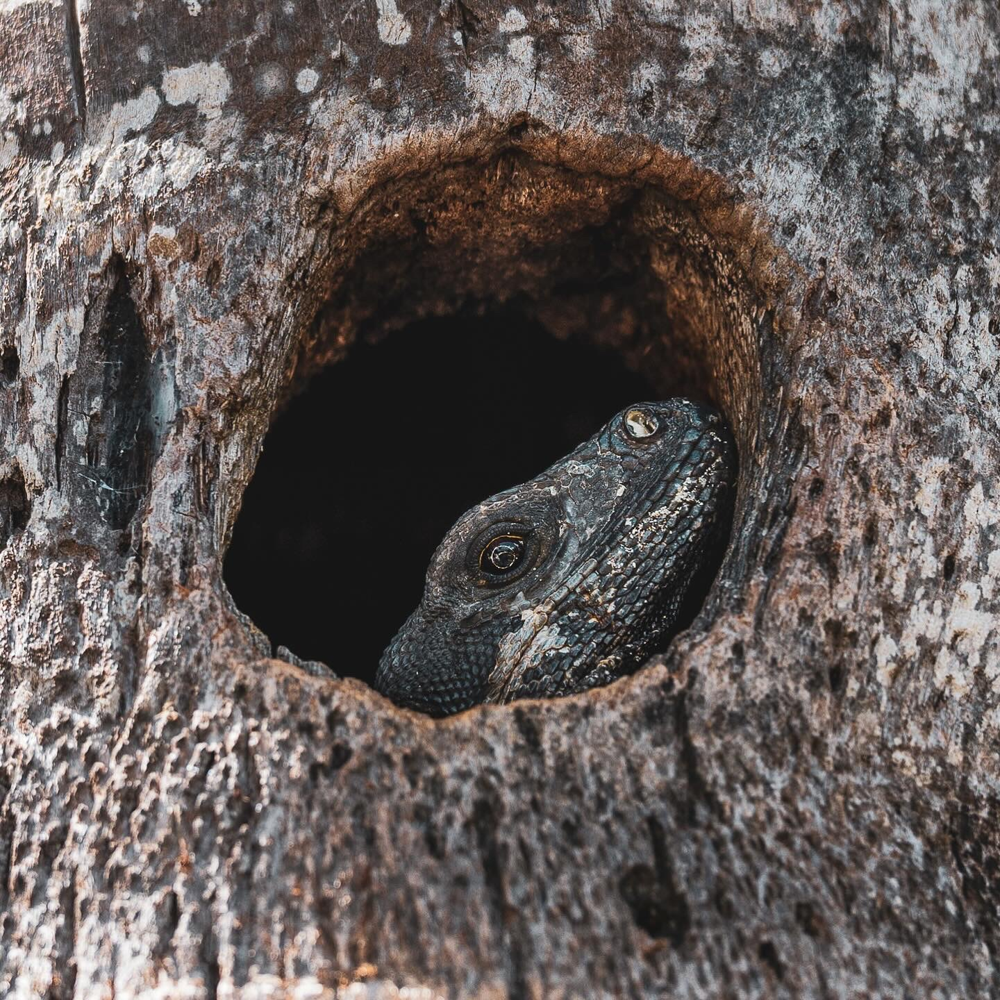
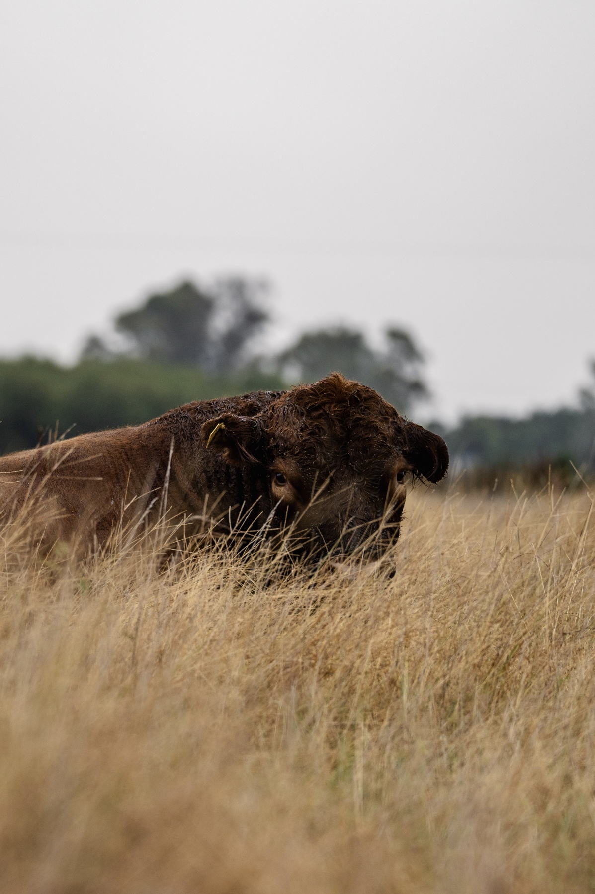
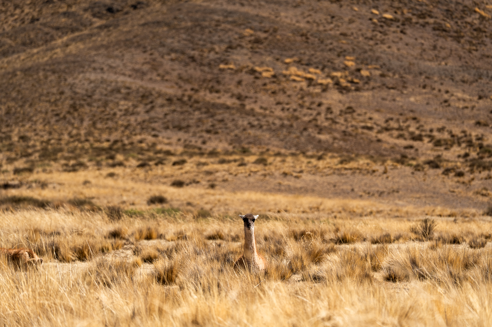
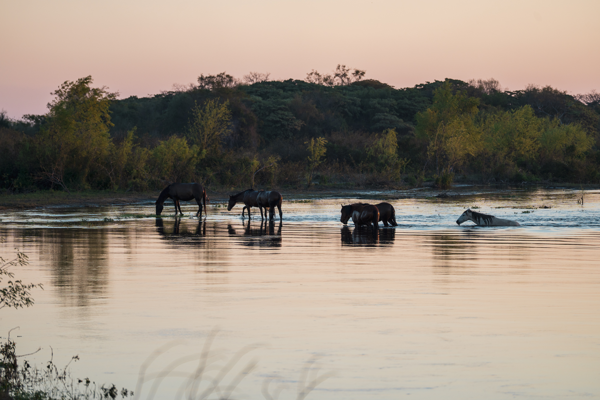

Sustainability
Sustainability is not a label.
For us, it means designing architecture that consumes less energy, lasts longer, and deepens the relationship between people and nature.
01
It is the foundation of how we design.
Through the scientific method, we reduce buildings' dependence on fossil-fuel energy. Through orientation, form, and materiality, we maximize comfort and indoor environmental quality.

02

Our process begins with research.
We analyze local climate data — solar radiation, wind patterns, humidity, and seasonal variations — and measure real conditions on site. We model performance through dynamic simulations, where every decision is tested, calibrated, and validated.
It is not assumed — it is verified.
03
We work with the sun, the wind, and the land.
We quantify both embodied and operational carbon, evaluating materials and energy demand throughout the building's life cycle. We maximize natural daylight and ventilation while controlling heat gains, achieving stable conditions across seasons.
This approach allows us to avoid generic "green" solutions and develop climate-specific strategies for each project: simple, effective, and durable.

Climate-specific
No generic solutions. Every strategy responds to the site's measured conditions.
Verified performance
Dynamic simulation and on-site measurement replace assumptions.
Full life cycle
Embodied and operational carbon evaluated from material to demolition.


Design strategies
Strategies

01
Correct Orientation
Alignment of the building relative to the sun and prevailing winds.
02
Envelope Thermal Transmittance
Rate of heat loss through the building envelope; lower transmittance means better insulation and efficiency.
03
Thermal Mass
Materials that store heat during the day and release it slowly, stabilizing indoor temperature.
04
Glazing Fraction
Proportion of glazed surface that balances natural light, thermal losses, and solar gains.
05
Albedo
A surface's ability to reflect solar radiation; high albedo reduces heat buildup.
06
Solar Shading
Elements that block direct radiation and reduce thermal gains while maintaining natural light.
07
Natural & Night Ventilation
Cross ventilation and night cooling that remove accumulated heat without mechanical systems.
08
Green Roofs
Vegetated roofs that cool through evaporation, retain rainwater, and improve insulation and biodiversity.

A Timbó project is not sealed: it breathes.
It engages its surroundings and evolves with those who inhabit it.
Our architecture adapts to life and its changes.